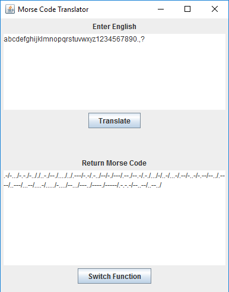
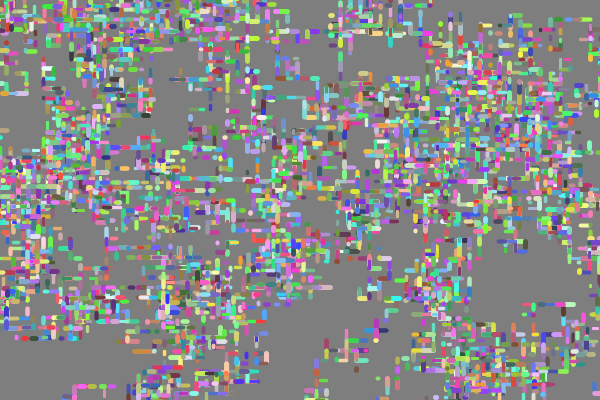
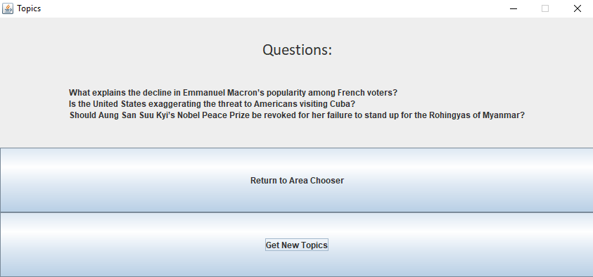
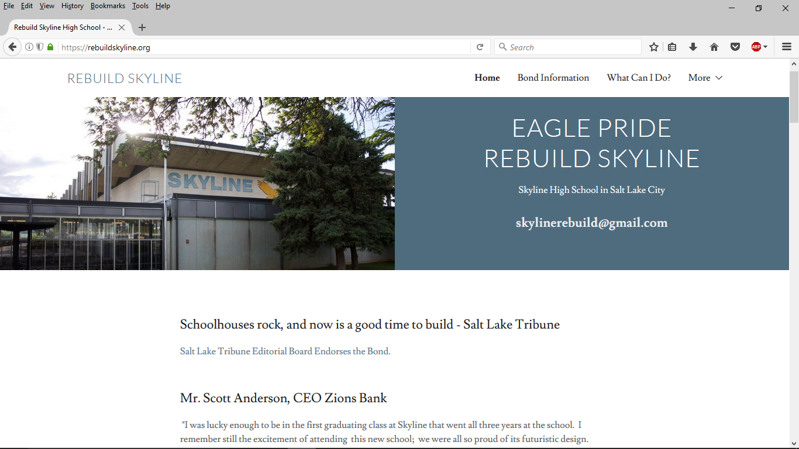
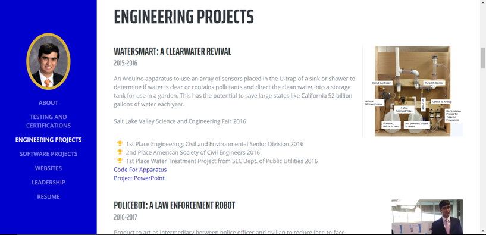
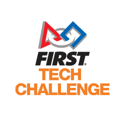

Kanishka Ragula
Experienced Computer Programmer and future Computer Engineer and Inventor
Scholarship
- AP Computer Science A: 5
- IB Computer Science: 6
- Java
- C#
- Processing
- Arduino
- R
- HTML
- Python
Engineering Projects
Watersmart: A Clearwater Revival
Salt Lake Valley Science and Engineering Fair 2016
- 1st Place Engineering: Civil and Environmental Senior Division 2016
- 2nd Place American Society of Civil Engineers 2016
- 1st Place Water Treatment Project from SLC Dept. of Public Utilities 2016
Code For Apparatus
Project PowerPoint
PoliceBot: a Law Enforcement Robot
Salt Lake Valley Science and Engineering Fair 2017
- 1st Place Engineering: Mechanical Senior Division 2017
- 1st Place Utah Department of Transportation 2017
- 1st Place US Metric Association
Lassonde High School Entrepreneur Challenge 2017
- 1st Place Top Online Vote for Best Project (792 votes)
- Top 6 Projects at HSUEC 2017
- Top 24 Projects in Utah 2017
Project PowerPoint
FIRST Tech Challenge Robot
Software and Programs
Empirical Formula Solver - Java
The empirical formula of a molecule is the relative number of elements in a molecule.
This program will take in the values of percents of atoms in an unknown molecule,
calculate the amount of each atom in the molecule, and then return the Empirical
Formula of the molecule.
The user enters values for elements and percents
and the compound is returned to the user. The option to see the steps taken to get
to the final result is available after a calculation has been done.
Download .zip file, unzip, and open index.html for an organized outline and development of project.
RepositoryVirus Champion - Processing
Game developed during 2016-2017 School Year to Compete in Video Game Design at the Utah TSA State Competition. User is a white blood cell and has to progress through an artery eliminating infected cells through mitosis. I developed 90% of the logic and rendered the images for the Game. Artwork done by Zachary Post. Music logic done by Colin Shen.

Repository
Morse Code Translator - Java
This program was created to translate 6 pages of text written by a fellow student in Morse Code. As he filled it with symbols with no Morse Code Translations, I had to account for this in the program. The program takes in text given by the user in either English or Morse Code and translates it to the other language. A “Return” button allows switching between the functions without restarting the App.
Download .jar file above
RepositoryDashes Screen Saver - Processing
A Screen Saver I made during the 2015-2016 school year. Randomly generates dots and dashes to cover screen. Collision with end detection prevents generating points from going off screen.
Repository
Cars Screen Saver - Processing
Another Screen Saver I made during the 2015-2016 school year. Randomly generated cars drive across the screen on a generated road. My first experience with arrays.
Repository
Extemporaneous Questions Generator - Java
A project I developed during the 2017 Summer and school year while at debate Nationals. This project addresses the need I had for questions to be randomly generated for practice speeches. This reads three files (national topics, foreign topics, or combined topics) and returns three randomly selected questions.
Download and unzip folder.
Repository
Websites I Developed
Rebuildskyline.org

Ragula.net?

Leadership
Skyline FIRST Tech Challenge
Co-founder (2015) and Programming Captain (2015-2018)
I co-founded the Skyline FIRST Tech Challenge Team, a robotics team focused not only on the technical aspects of a competition but also the business aspects and applications of the robots in the field. I worked to fundraise over $8000 for the team through meetings with Venture Capitalists, bankers, and industry leaders in the field. As Programming Captain, I developed the program to control the robot during competition and managed the hardware.

Skyline Technology Student Association
Sergeant-in-Arms (2017-2018)
Elected Sergeant-in-Arms of Skyline's TSA Chapter in 2017. Participated in Video Game Design in the 2016-2017 year with Virus Champion. Planning on competing this year in Extemporaneous Speaking, Video Game Design, Web Master, and Chapter Team.
Service
Skyline Computer Science TA
2017-2018
I assist in the instruction of programming concepts to students in the AP, IB, and Introductory programming classes. Bug-test applications coded by students to test accuracy and errors in the code and help debug code if needed. Instruct students on concepts they may be unfamiliar with before tests.